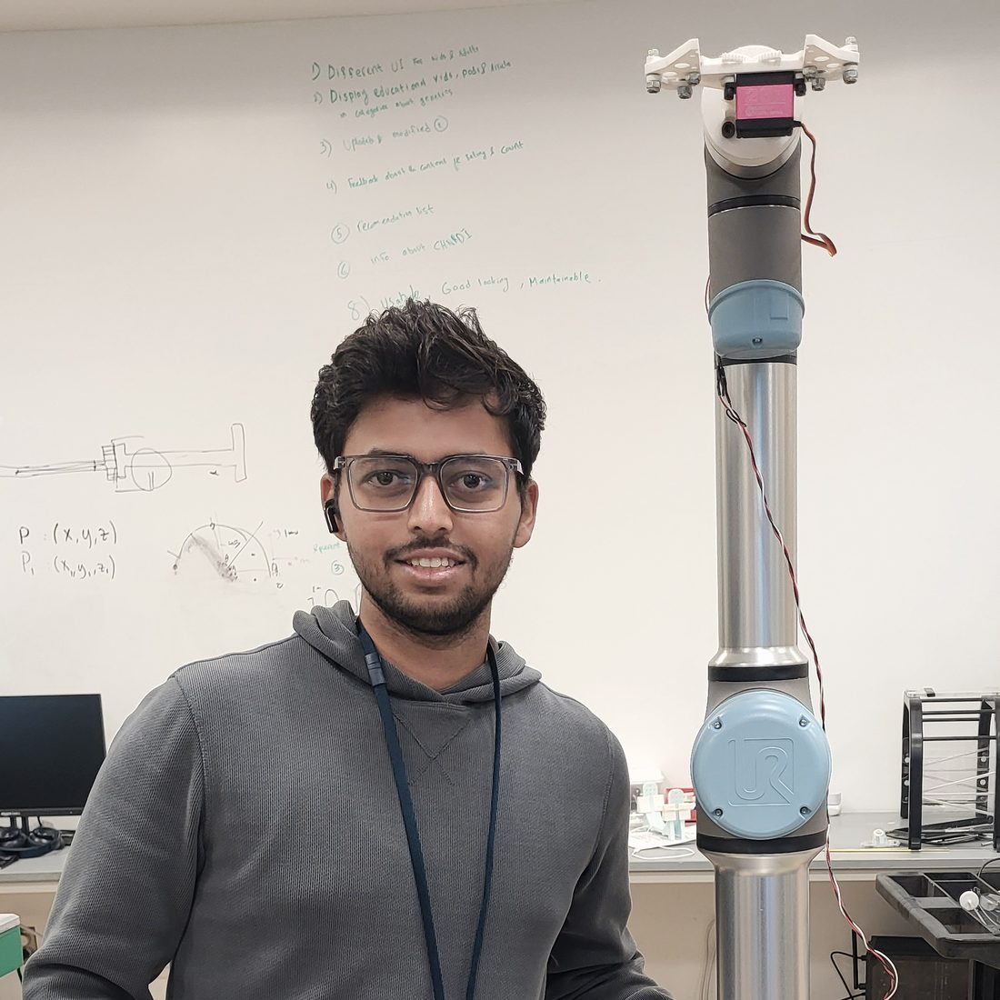
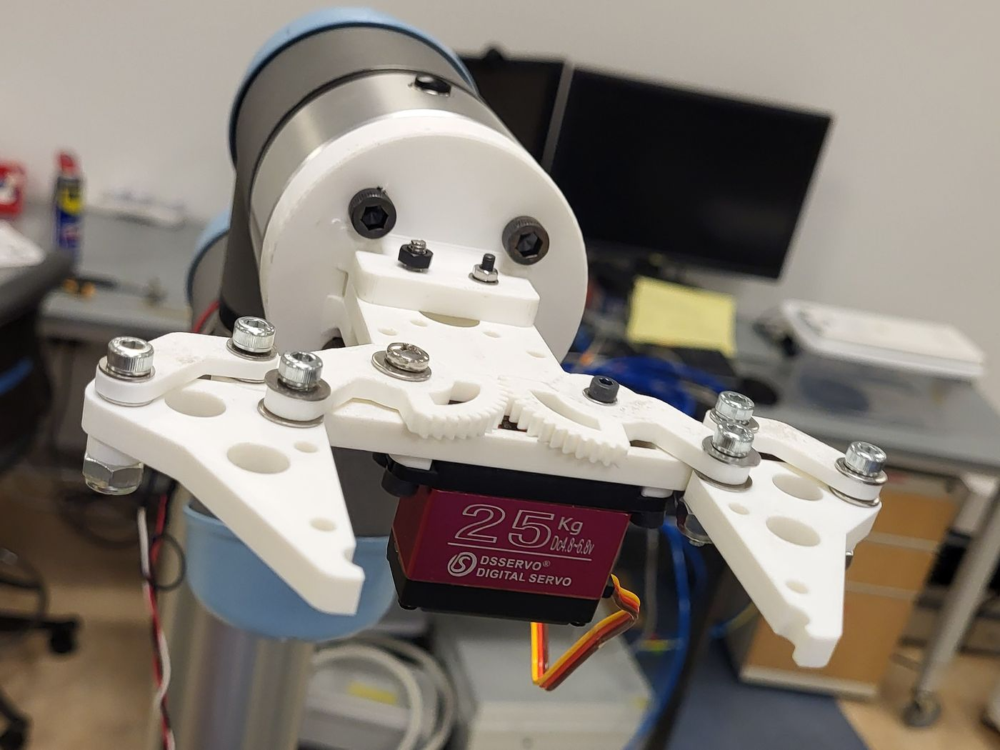
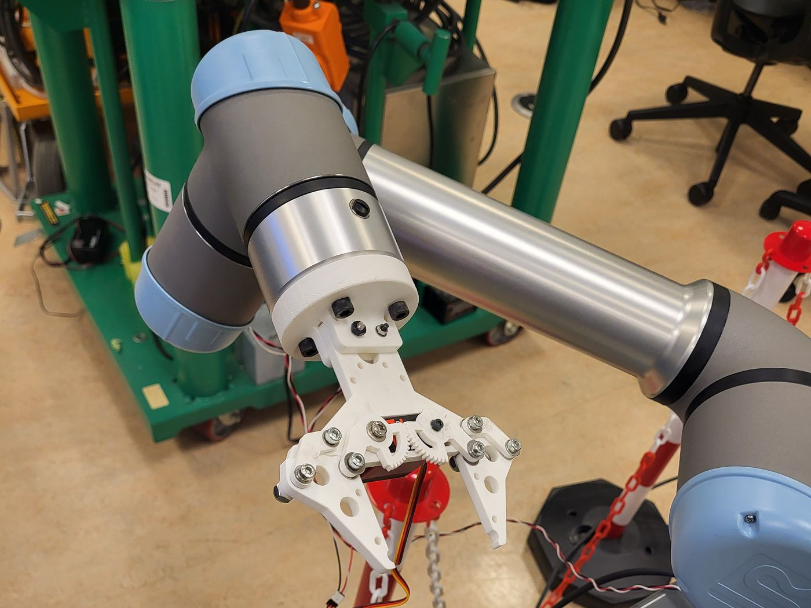
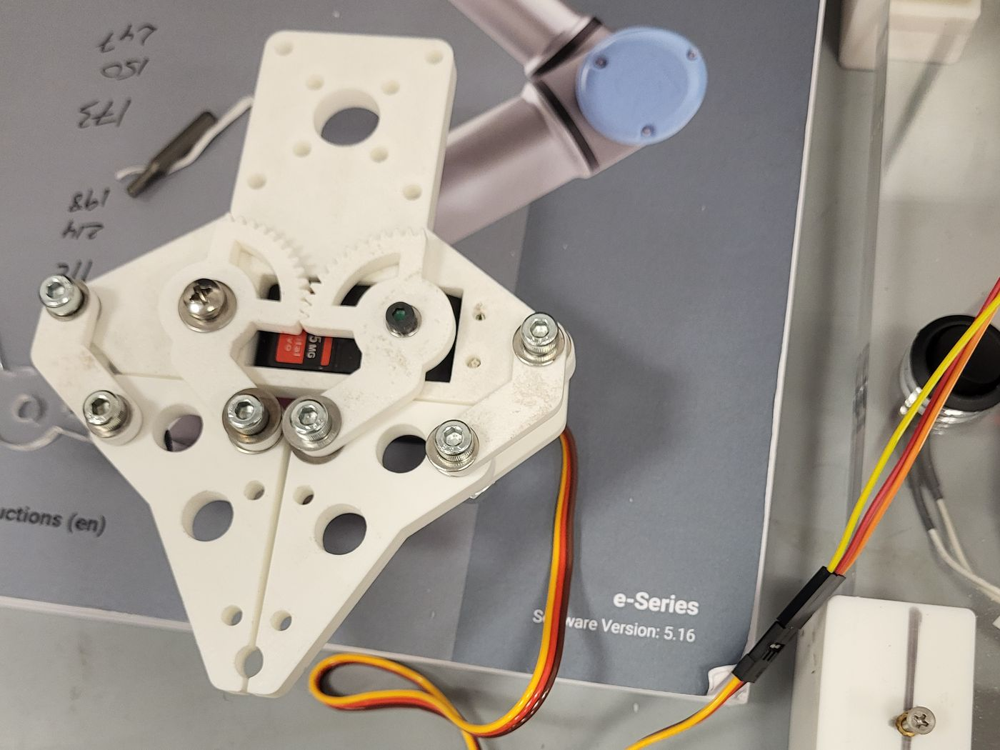
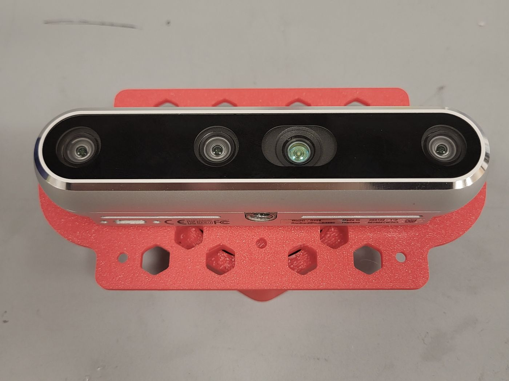
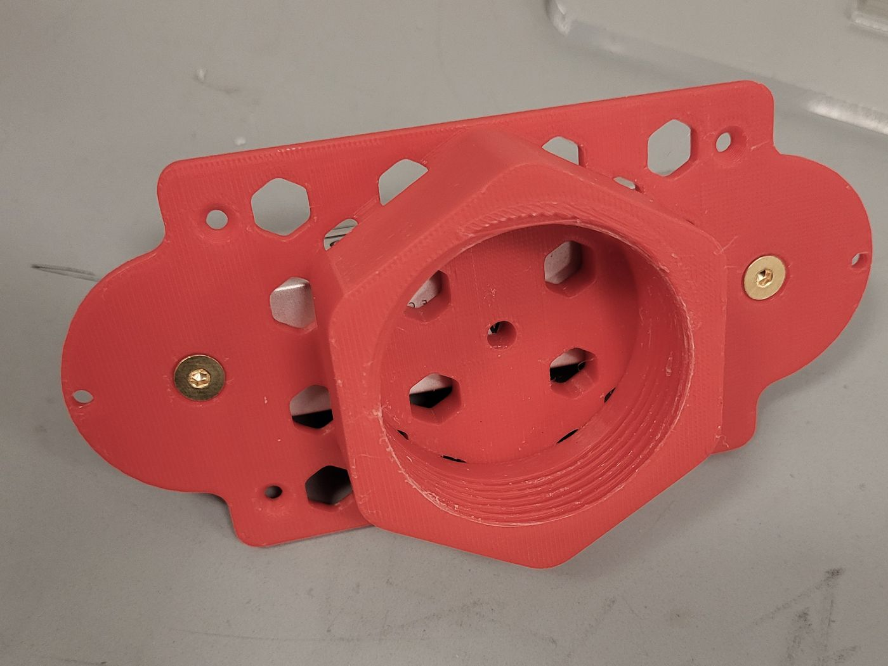
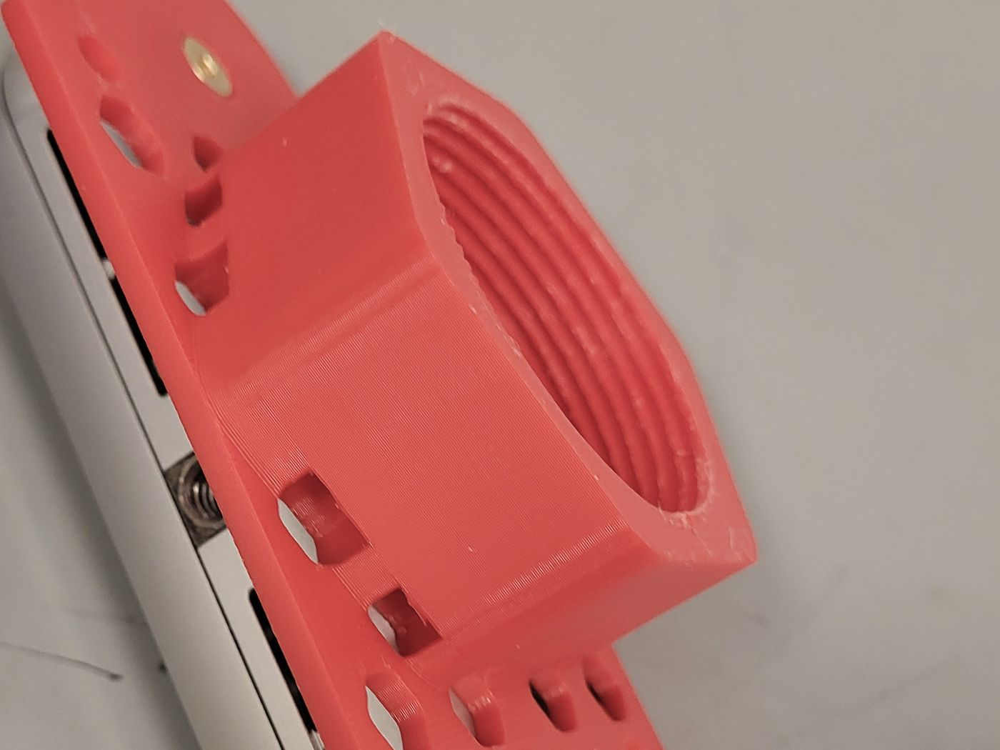

Robotics
- ROS2
- ros2_control
- MoveIt!
- Gazebo
- URDF
- OpenCV
I'm a Robotics M.Eng. student at the University of Maryland. I work on robotic manipulation, custom grippers and the embedded hardware behind them.

Skills
The tools I use to design, build, calibrate and program robots.
Projects
A UR5 with a custom parallel-jaw gripper and Intel RealSense depth sensing, picking up and sorting surgical tools.
The video could not be loaded.
Watch it on YouTubePick and place demo with the Gazebo simulation, RViz and the camera view side by side. Also on YouTube
The task
Surgical tools have to be found, picked up and put in the right place, every time. This project gives that job to a UR5. It sees the workspace, works out what to do, and grips each tool with a gripper built for it.
The system
Three parts working together today, and one planned for what comes next.
Hardware
I'm developing a custom parallel-jaw gripper and integrating it with the UR5 for surgical-tool pickup and sorting experiments.



Sensing
An Intel RealSense camera provides depth sensing for workspace perception and for monitoring each experiment.



Software
Python interfaces connect perception and control, so each task can be evaluated as it runs and its data collected.
Next step
After the current pick and place, the next step is a Vision-Language-Action pipeline for the UR5, built on this foundation.
The pipeline
Follow a single pick through the system.
Intel RealSense RGB-D frames give the system color and depth for the whole workspace, and let the experiment be monitored while it runs.
ROS2 and Python interfaces drive the UR5 through each pickup and sorting task.
The custom parallel-jaw gripper closes on the instrument. It was developed for this task and integrated with the UR5 for pickup and sorting.
The arm places each instrument into its sorting position, which is the goal of the pickup and sorting experiments.
Python perception and control interfaces support closed-loop task evaluation and data collection, so each experiment can be scored and its data kept.
Project details
Contact
Happy to talk about manipulation, grippers or my project.